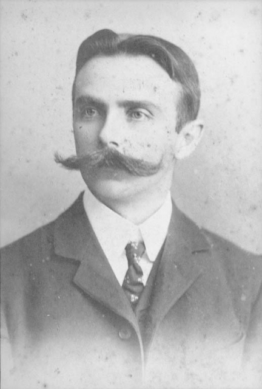

5 curiosidades sobre a Copa do Mundo
Você sabia que há muitas curiosidades sobre o futebol que nem todos têm conhecimento ? A Inglaterra, por exemplo, tem a fama de ter inventado o jogo, porém, apenas criou as regras. Os pioneiros na verdade foram os chineses e japoneses, que já batiam os pés na bola há pelo menos 2 mil anos.

O responsável pela chegada do futebol no Brasil foi Charles Miller, um estudante paulista que retornava da Inglaterra, em 1894, trazendo na bagagem uma bola, uniformes e um livro com as regras. No começo, apenas a elite praticava o esporte. Existia uma relutância em deixar que o futebol se popularizasse. Porém, as barreiras não foram suficientes para impedir a democratização. Aliás, se o futebol continuasse limitado, talvez não pudéssemos dizer hoje que somos uma referência mundial.
1. A primeira Copa do Mundo aconteceu em 1930
Já na primeira edição, realizada no Uruguai, a Copa do Mundo mobilizou multidões de torcedores (que fizeram muito barulho) dentro dos estádios. Na final, havia 93 mil pessoas no Estádio Centenário.
2. Em 1938, com a primeira transmissão da Copa pelo rádio, as aglomerações se intensificaram
Esse foi o primeiro mundial com transmissões ao vivo pelo rádio. O brasileiro acompanhou cada passo da seleção em tempo real. Verdadeiras multidões se concentravam nas ruas, nas praças e nos estádios de futebol para escutarem os passes e gols, que eram amplificados por alto-falantes. Até então, apenas os jornais impressos faziam as coberturas dos mundiais no Brasil.
3. A primeira transmissão na TV em cores aconteceu em 1970
A Copa desse ano foi o primeiro evento a ser transmitido ao vivo e em cores pela televisão brasileira. A notícia provocou uma corrida às lojas de eletrodomésticos, que venderam milhares de aparelhos nos meses que antecederam a ocasião.
4. Em 2010, as redes sociais viraram pontes de interação com os jogos
Nesse período, a segunda tela (um olho no jogo e outro nas redes sociais) serviu para que o torcedor começasse a interagir em tempo real (principalmente no Twitter, Orkut e no Facebook) sobre cada lance do jogo. Os amantes da bola passaram a se manifestar, criticar ou elogiar técnicos, juízes e jogadores, além de trocar ideias com outros torcedores de todo o mundo.
5.Em 2022, a maioria dos brasileiros acredita que o país será campeão
Hoje, embora muitos torcedores se sintam mais distantes da seleção brasileira, 71% acreditam que o Brasil vencerá a Copa do Mundo deste ano e que, com isso, o povo irá se reconectar com o futebol.